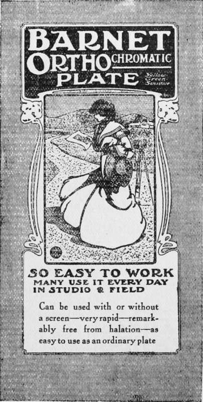
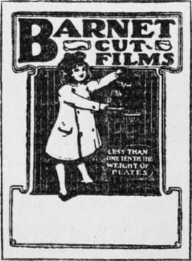

Orthochromatic Plates And Colour Screens. Part 3
Description
This section is from the book "The Barnet Book Of Photography", by Herts Barnet. Also available from Amazon: The Barnet Book Of Photography.
Orthochromatic Plates And Colour Screens. Part 3
The method I have adopted recently is much simpler. I purchase a sheet of clear gelatine of a suitable thickness, stain it in an aqueous solution of dye to the required tint, squeegee it upon glass to dry, strip it, and then cement it as before between two sheets of glass. The gelatine can be bought from J. Bousquet, of 28 Barbican, London, E.C. in large sheets of a thickness of about one-hundredth of an inch, at sixpence each. It is perfectly clear and fairly uniform in thickness, although it may happen that a sheet is a trifle thicker at one end than at the other. As, however, the pieces we want need not be more than two inches square or so, the variation in thickness is negligible. The same firm sells thinner sheets at threepence each, but these are useless for our purpose.
APPROXIMATE SPEED. | H.& D. | W ATKINS | WYNNE |
200 | 250 | / 118 |
Of the many dyes I have tried I would suggest " Brilliant Yellow" and "Naphthol Yellow S.E.," both imported by the Bayer Company, and obtainable in small quantities from Penrose & Co., of 109 Farringdon Road, London, EC, and from other chemists and dealers who stock Bayer's preparations. One ounce of each will make many hundreds of screens, and the cost is trifling. The glass is the most expensive item, as it must be clear, perfectly flat, and free from flaws, otherwise the definition of the picture will suffer. Old negative glass has been suggested, but although this is the best of its kind, yet when two thicknesses are cemented together it introduces an amount of distortion fatal to good definition. A thin so-called parallel glass can sometimes be obtained from Hetley's, of Soho Square, at a moderate price, but it is necessary that the purchaser should make a personal selection. Plate-glass ground optically flat by an optician is the most perfect, but is extremely expensive, so for all ordinary purposes I suggest the thinnest patent plate which can be obtained. It is sold by most glass merchants in a good way of business. The size to which it is to be cut will depend upon the aperture of the lens, but three inches square will be found generally suitable, and as the cost of it is chiefly in the labour of looking it out and cutting it up, it is better to get a dozen or so of pieces at one time.
Barnet Cut Films
The gelatine should be cut at least an inch larger each way than the glass it is to be dried upon. Old quarter-plate glasses well cleaned with whiting and ammonia do very well, as if the dyed gelatine proves faulty in places the pieces will still be large enough for the faults to be cut away. The gelatine should be handled as little as possible, and those whose fingers are damp may with advantage wear gloves while cutting it up. A piece of the gelatine is immersed in a solution of the dye till it is thoroughly limp and has absorbed all the dye it is capable of taking up— five minutes' immersion will be long enough. It is then transferred to a dish of clean water and rinsed for a minute or two, and a piece of the clean negative glass slipped under it, when the two are lifted out and allowed to drain till all the water between the film and the glass has escaped. The corners may then be clipped off with a pair of scissors and the edges folded under the plate—this will prevent them from cockling up during drying. The glass may then be stood on the bottom of a tumbler, and the surface of the film lightly dried with fluffless blotting-paper. Care must be taken that no dust settles upon the film while it is drying; but this is a precaution to which all photographers are accustomed.
In a moderately dry room the film will dry completely in about twenty-four hours, and then if the edges are cut round with a knife the film will fly off. No grease or talc should be applied to the glass. If it is properly cleaned with the whiting and ammonia there is no risk of the gelatine sticking. It is quite possible that every piece will not be quite perfect, so it is desirable that two or three of each useful strength should be prepared, from which a selection may be made, and it is well to apply the tests suggested later on before cementing the film to the glass.
This cementing operation is by no means difficult. A small bottle of Canada balsam, to be obtained from dealers in microscopes or from most photographic dealers, is required. The plate-glass having been thoroughly cleaned, a little of the balsam is placed in the middle of one side of each piece, and they are placed in a warm, but'not hot, oven for the balsam to soften. A perfect piece of the film rather larger than the glass is placed on top of one glass, and the other glass laid on that. By pressing on the centre the balsam can be made to spread outwards till it exudes from the edges. A couple of " bull-dog" letter clips, or a pair of bicycle trouser-clips will help in bringing the glasses and film into close contact if the whole arrangement is again placed in the oven. It must be noted that the oven must only be moderately warm or the screen will be spoiled. When it is seen that the excess of balsam has been driven out the screen may be hung up in a warm place till the balsam at the edges is moderately hard, when the protruding gelatine is to be trimmed off, the glass cleaned with benzole, and a strip of lantern binding pasted round the edges.
The nature of the dye and the strengths of the solutions will depend upon the work to be done. When it is possible to use a screen that will correct the plate from the blue to the orange we should do so, but as such a screen requires about three or four times the normal exposure we must for some work employ one that gives only partial correction. I cannot, therefore, do better than give a number of tests made with screens of different intensities and state the nature of the solutions used, leaving it to each worker to select those that will best suit his purpose. For stock purposes one drachm of brilliant yellow may be dissolved in one hundred drachms of water and filtered ; the napthol yellow may be made up in the same way.
Continue to:
- prev: Orthochromatic Plates And Colour Screens. Part 2
- Table of Contents
- next: Orthochromatic Plates And Colour Screens. Part 4
Tags
paper, print, negative, exposure, lens, development, camera, focus